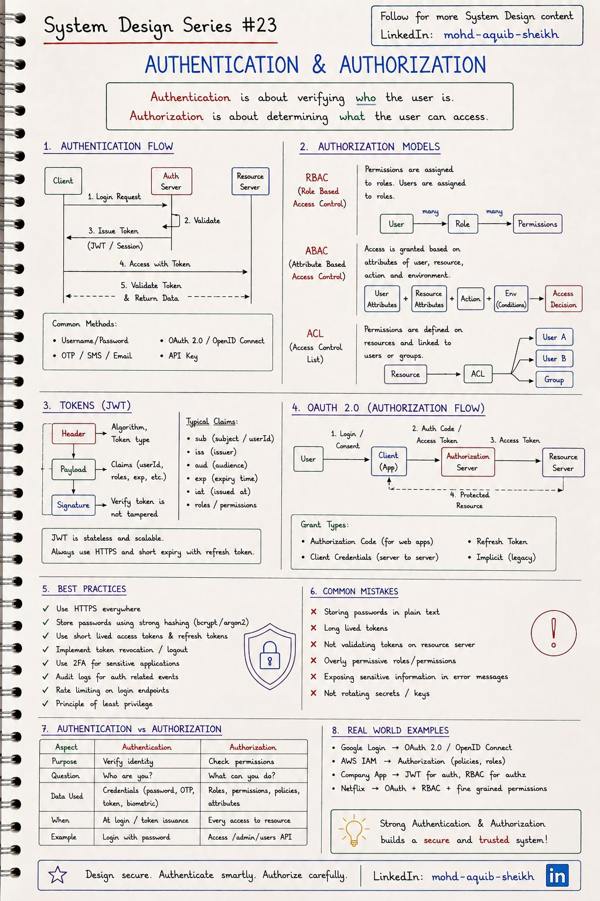
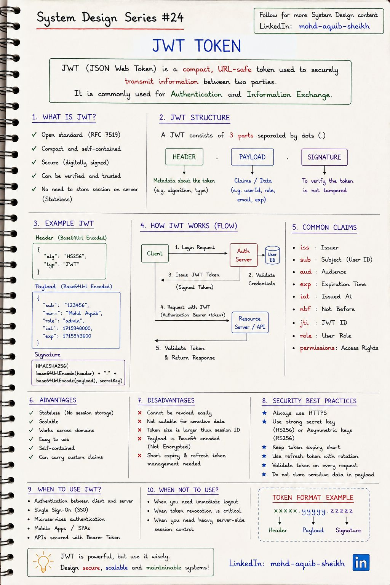
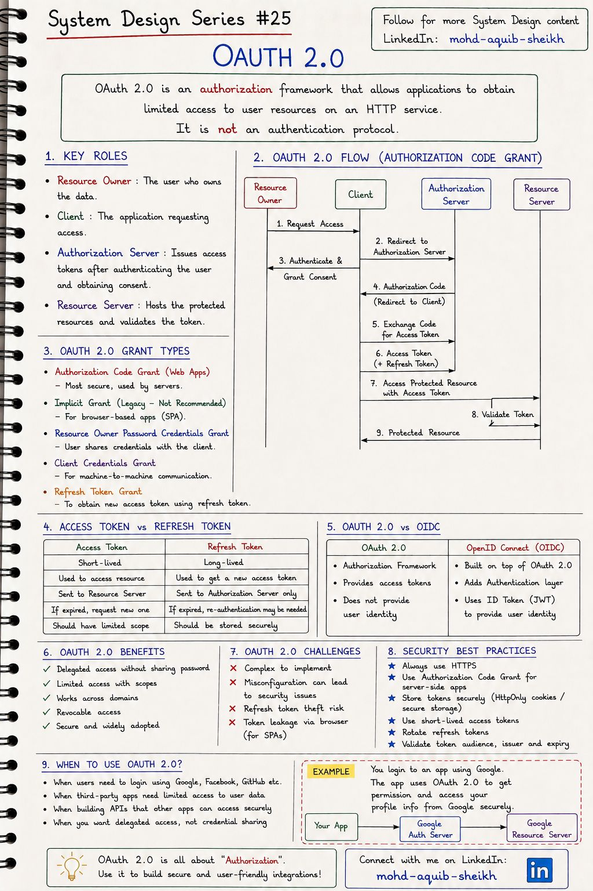

Аутентификация и авторизация
Два вопроса, которые система задаёт каждому запросу: «кто ты?» и «что тебе можно?». Глава разбирает модели прав доступа, устройство JWT и то, как OAuth 2.0 позволяет приложению действовать от имени пользователя, не зная его пароля.
5.1Аутентификация и авторизация#23
Аутентификация (authentication, AuthN) проверяет личность: пароль, одноразовый код, биометрия. Авторизация (authorization, AuthZ) решает, разрешено ли этой личности конкретное действие над конкретным ресурсом. Первая происходит при входе, вторая — при каждом обращении.


Модели авторизации
| Модель | Как принимается решение | Сильная сторона | Слабая сторона |
|---|---|---|---|
| RBAC Role-Based | Права назначены ролям, роли — пользователям | Просто понять и проверить; подходит большинству систем | «Взрыв ролей», когда нужны условия вроде «только свои заказы» |
| ABAC Attribute-Based | Правило над атрибутами пользователя, ресурса, действия и окружения | Тонкие условия: отдел, время, владелец, сумма | Сложнее писать, тестировать и объяснять |
| ACL Access Control List | У каждого ресурса — список, кому что разрешено | Точечный доступ к объекту (файл, документ) | Плохо масштабируется на миллионы объектов |
На практике комбинируют: RBAC для грубого деления (админ / оператор / клиент) плюс проверка владения ресурсом в коде или через политику. В Spring Security это @PreAuthorize("hasRole('ADMIN') or #order.ownerId == authentication.name").
/orders/123 принадлежит именно этому пользователю. Валидный токен отвечает на вопрос «кто», но не на вопрос «можно ли к этому объекту». Проверка владения нужна в каждом эндпоинте с идентификатором в пути.
- Пароли хранят только в виде медленного хэша с солью: bcrypt, scrypt, argon2. Не SHA-256 — он слишком быстрый для перебора.
- Эндпоинты входа — первая цель перебора: на них обязателен rate limiting (тема 04).
- Сообщения об ошибках не должны различать «нет такого пользователя» и «неверный пароль».
5.2JWT#24
JSON Web Token — компактный токен из трёх частей, разделённых точками: header.payload.signature. Сервер, получив токен, проверяет подпись и доверяет содержимому, не обращаясь к хранилищу сессий. Отсюда главное достоинство — отсутствие состояния на сервере — и главный недостаток: выданный токен трудно отозвать.


| Claim | Смысл | Проверять? |
|---|---|---|
iss | Кто выдал токен | Да — совпадает с ожидаемым сервером авторизации |
sub | Субъект — идентификатор пользователя | Использовать как идентификатор |
aud | Для кого предназначен | Да — токен для другого сервиса нужно отклонить |
exp / nbf / iat | Истекает / не раньше / выдан | Да, с небольшим допуском на расхождение часов |
jti | Уникальный идентификатор токена | Нужен для списка отозванных |
- Payload закодирован, а не зашифрован. Base64url читает любой, у кого есть токен. В payload не кладут секреты и персональные данные. (Шифрованный вариант — JWE — существует, но используется редко.)
- HS256 или RS256. HS256 — один общий секрет: кто умеет проверять, тот умеет и выпускать, поэтому годится только внутри одного сервиса. RS256/ES256 — приватный ключ только у сервера авторизации, остальные проверяют публичным (берут его по адресу JWKS). В микросервисах — всегда асимметричная подпись.
- Алгоритм фиксируют на стороне проверяющего. Нельзя доверять полю
algиз самого токена: атакиalg: noneи подмена RS256 на HS256 (публичный ключ как HMAC-секрет) основаны именно на этом. - Отзыв. Варианты: короткий срок жизни access-токена (5–15 минут) + refresh-токен с ротацией; чёрный список по
jtiв Redis с TTL до истечения токена; версия токена в профиле пользователя. Любой из них возвращает часть состояния на сервер — «stateless» всегда компромисс. - Где хранить в браузере.
localStorageдоступен любому скрипту на странице (XSS крадёт токен). Cookie с флагамиHttpOnly; Secure; SameSiteнедоступна JavaScript, но требует защиты от CSRF.
5.3OAuth 2.0#25
OAuth 2.0 — фреймворк делегированной авторизации: пользователь разрешает приложению ограниченный доступ к своим данным на другом сервисе, не сообщая приложению пароль. Конспект подчёркивает главное: OAuth 2.0 сам по себе не протокол аутентификации.


Четыре роли
| Роль | Кто это | Пример «Войти через Google» |
|---|---|---|
| Resource Owner | Владелец данных | Вы |
| Client | Приложение, которому нужен доступ | Сайт, на который вы входите |
| Authorization Server | Аутентифицирует владельца, спрашивает согласие, выдаёт токены | accounts.google.com |
| Resource Server | Хранит данные, принимает access-токен | API профиля Google |
Поток Authorization Code
- Клиент перенаправляет браузер на сервер авторизации, указывая запрашиваемые права (
scope). - Пользователь входит и даёт согласие — на стороне сервера авторизации; клиент пароль не видит.
- Сервер авторизации возвращает браузер к клиенту с одноразовым кодом авторизации.
- Клиент по защищённому каналу «сервер–сервер» обменивает код на access token (и refresh token).
- Клиент обращается к API с access-токеном; сервер ресурсов проверяет токен и отдаёт данные.
Зачем промежуточный код, а не сразу токен? Код проходит через браузер (URL, история, логи), а токен — нет: он выдаётся только в обмен на код в прямом запросе, где клиент подтверждает свою подлинность.
| Access token | Refresh token | |
|---|---|---|
| Срок жизни | Минуты | Дни, недели |
| Куда отправляется | На сервер ресурсов с каждым запросом | Только на сервер авторизации |
| Если украден | Ущерб ограничен коротким сроком и scope | Серьёзно — поэтому ротация: каждый refresh выдаёт новый, старый гасится |
- PKCE обязателен. Клиент создаёт случайный
code_verifier, отправляет его хэш в первом запросе и сам verifier — при обмене кода. Перехваченный код бесполезен без verifier. Сначала PKCE придумали для мобильных приложений и SPA, которые не могут хранить секрет клиента; сейчас он рекомендован всем. - Implicit grant и Password grant исключены. Конспект называет Implicit «legacy» — точнее сказать «запрещён»: токен в URL-фрагменте утекает. Для SPA сейчас — Authorization Code + PKCE, часто через серверный компонент (BFF), чтобы токены вообще не попадали в браузер. Password grant требовал отдавать пароль клиенту — то, от чего OAuth и должен избавлять.
- Параметр
stateв первом запросе защищает от CSRF: клиент проверяет, что вернулся тот же случайный токен. - Client Credentials остаётся основным способом для взаимодействия «сервис–сервис», где пользователя нет.
/userinfo и стандартные scope (openid, profile, email). «Войти через Google» — это OIDC. В Spring Security: oauth2Login() для входа, oauth2ResourceServer().jwt() для проверки токенов в API.
5.4Интерактив: что внутри JWT
5.5Самопроверка
Зашифровано ли содержимое обычного JWT (JWS)?
- Да, ключом сервера
- Да, открытым ключом клиента
- Нет: оно закодировано Base64URL и подписано — подпись защищает от изменения, но не от чтения
- Зависит от алгоритма подписи
Главная сложность stateless-токенов?
- Они медленные
- Отзыв: выданный токен действует до exp, сервер не хранит состояния, чтобы его отменить
- Их нельзя передавать по HTTPS
- Они не поддерживают роли
Зачем в OAuth 2.0 Authorization Code Flow нужен PKCE?
- Чтобы перехваченный код авторизации нельзя было обменять на токен без секрета, известного только начавшему процесс клиенту
- Для шифрования токена
- Для ускорения входа
- Чтобы не использовать HTTPS
Когда вернуть 401, а когда 403?
401 — личность не установлена: токена нет, он просрочен или подпись неверна; клиенту нужно аутентифицироваться заново. 403 — личность установлена, но прав на действие нет; повторная аутентификация не поможет.
Можно ли положить в JWT номер паспорта пользователя, раз токен подписан?
Нет. Подпись защищает от изменения, а не от чтения: payload — это Base64url, его декодирует кто угодно. Токены попадают в логи, заголовки, прокси. В payload — только идентификаторы и права.
Пользователь нажал «Выйти со всех устройств». Как это реализовать с JWT?
Сам токен отозвать нельзя — он действителен до exp. Варианты: удалить все refresh-токены пользователя (доступ закончится, когда истечёт короткий access-токен); вести чёрный список jti в Redis; хранить у пользователя «версию токенов» или время, раньше которого токены недействительны, и сверять при проверке. Для мгновенного выхода нужна проверка на стороне сервера при каждом запросе.
Зачем в Authorization Code нужен обмен кода на токен, если можно сразу вернуть токен?
Чтобы токен никогда не проходил через браузер. Редирект с кодом виден в адресной строке, истории и логах; код одноразовый, живёт секунды и бесполезен без секрета клиента или PKCE-verifier. Токен выдаётся в прямом запросе клиента к серверу авторизации.
Чем OIDC отличается от OAuth 2.0?
OAuth 2.0 — про доступ к ресурсам (авторизация): результат — access-токен для API. OIDC — про личность (аутентификация): добавляет ID Token в формате JWT с claims о пользователе и о самом входе (sub, iss, aud, auth_time, nonce), предназначенный для клиента, а не для API.